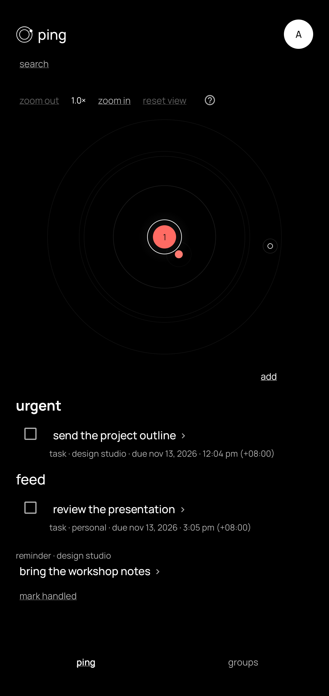
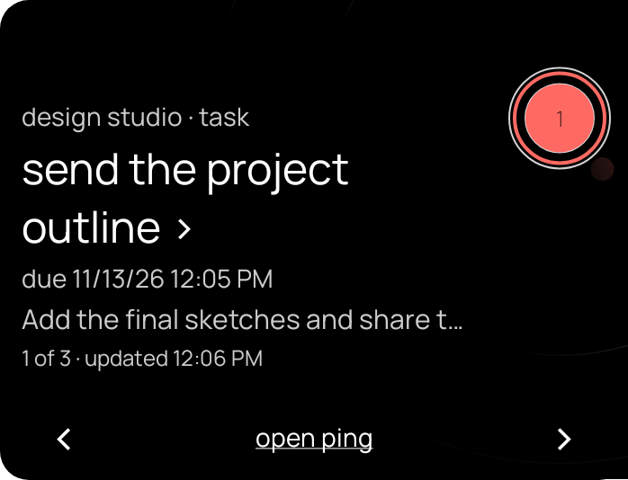

Android pilot
A quieter view of what’s due.
Keep personal tasks, reminders, and group deadlines in one place. The map shows what’s approaching and the urgent list shows what’s due.
Get PingVersion 0.1.8 · Android 10 and up

How Ping works
- See deadlines approach
Dated tasks move inward as their deadlines get closer. Reminders stay at the edge until you handle them.
- Work offline
After online setup, open cached work and save supported changes on your phone. Ping syncs when you reconnect.
- Share a group
Join by invitation or code and keep personal work in your own space.
One item on your home screen

Choose from five widget sizes and cycle through active tasks and reminders.
Join the Android pilot
Email the creator for an invitation. Once you have access, open the tester page on your Android device to install Ping.